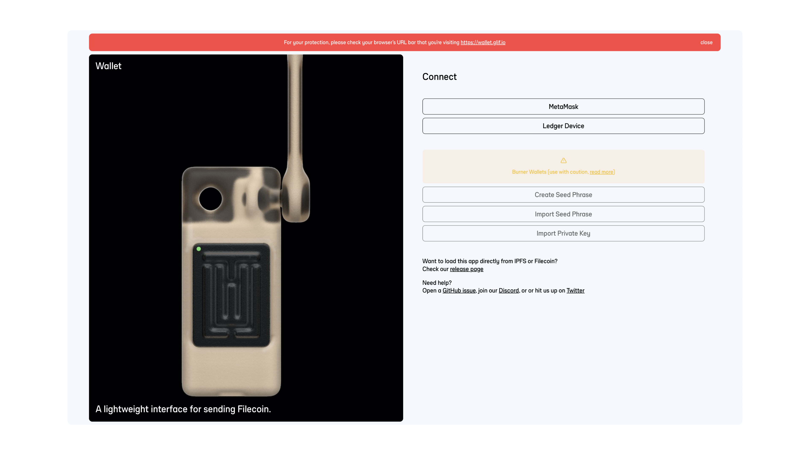
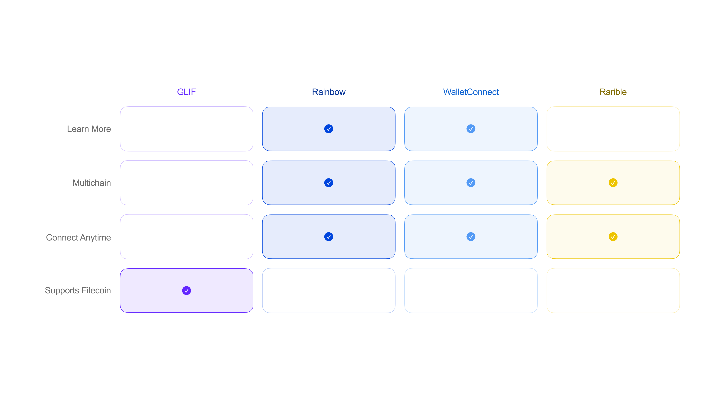
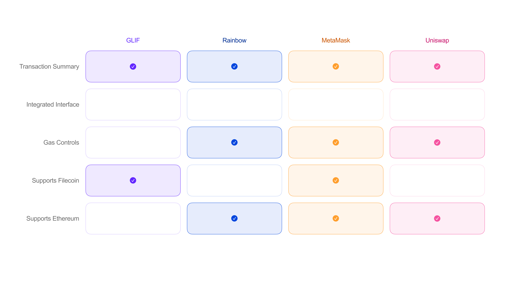
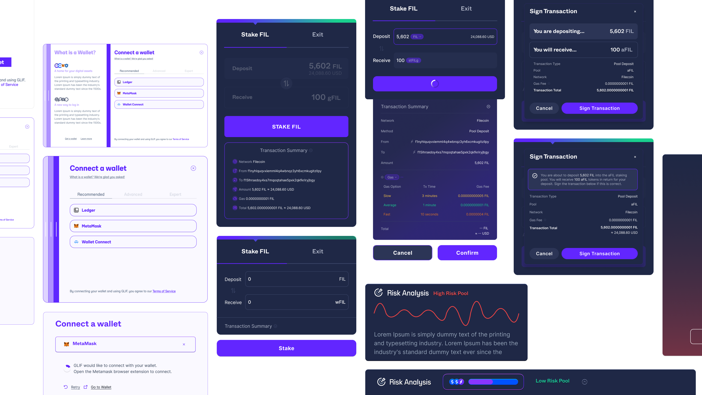
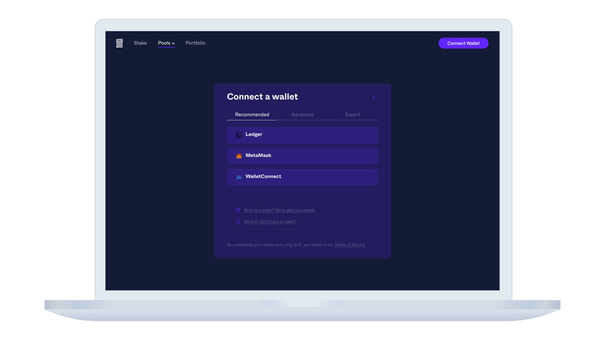
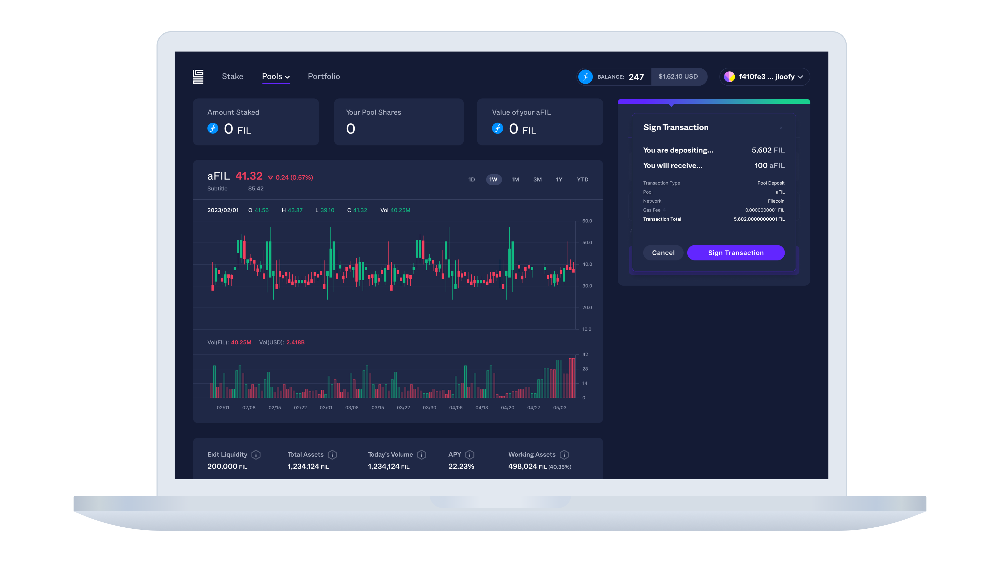
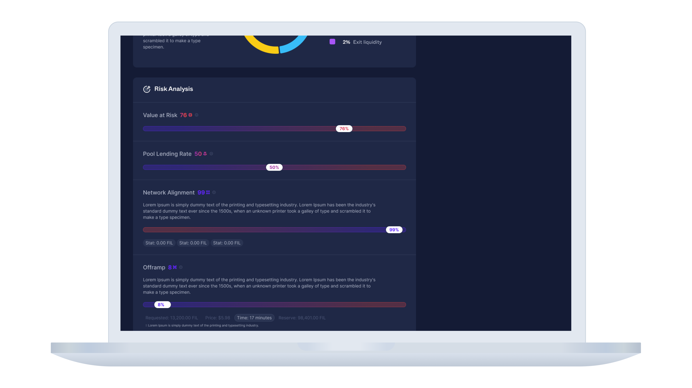

Overview
📌 GLIF has been building critical apps and tools for the Filecoin network since the pre-Mainnet days. My role as a UIUX designer involved providing creative design support with a focus on improving paint points where users interact with blockchain networks.
🗓️ Nov 2022 - Feb 2023
Key Terms
Blockchain
- A blockchain is a distributed database or ledger of transactions that is shared among the nodes of a computer network.
Wallet
- A crypto wallet allows users to send and receive cryptocurrencies such as Filecoin and Ethereum.
Cryptocurrency
- Cryptocurrency is typically digital money designed to be used over the internet independent of traditional banking systems.
Staking Pool
- Staking pools are made up of cryptocurrency assets that multiple users combine to increase their chances of receiving rewards.
Filecoin
- Filecoin is a decentralized storage network that enables users to rent out their unused computer storage space in exchange for Filecoin (FIL), a cryptocurrency that can be used to pay for storage and retrieval of files on the network, creating a more efficient and secure way of storing and sharing data.
GLIF
- GLIF builds and maintains essential Filecoin apps and tools. These apps include GLIF Wallet, Safe, Nodes, Explorer, Verifier and now Pools. GLIF Pools is a protocol for Filecoin staking pools.
Improving the Filecoin User Experience and Beyond
In early 2023, The Filecoin Virtual Machine (FVM) was launched. FVM brings user programmability to Filecoin, unleashing the enormous potential of an open data economy. In preparation of this launch, GLIF needed to update their existing suite of tools in anticipation of a new group of users. At the same time GLIF was preparing to launch a brand new application - GLIF Pools.
This update and new application included making GLIF accessible to both Filecoin and Ethereum users, developing distinct user flows for different sets of user groups, and improving the overall comprehension of the protocol.
Audit
Many of GLIF's features were out of date or had yet to be implemented. The existing solutions were clunky, hard to navigate, and in need of visual polishing. We wanted to improve the information architecture across the Suite, improve overall usability while keeping the visual language consistent, and focus on error prevention throughout a user's journey.
Analysis
 This is a breakdown of key features I identified across GLIF's competitors. I wanted to better understand what best practices were being used across the industry and what users were most familiar with. Our solution needed to be familiar and user friendly while also supporting specific GLIF needs.
A few of the major opportunities I identified included: enabling support of multiple blockchains so that various user groups could use GLIF applications, providing a better user experience by integrating controls directly into GLIF's interfaces, and illustrating the risk users are taking by engaging with the protocol.
Exploration
During my explorations the UI and UX had to be worked on simultaneously. The new design system was being built at the same time as we were creating new flows and interactions. What would ultimately end up being the best result for us still needed to be tested.
Solution
Here you see a few solutions I proposed to alleviate some of GLIF's major pain points. The first screen shows a wallet connection feature, the second is a transaction summary, and the third is a visualization for user risk.
GLIF Connect is a sign in feature that enables users to interact with GLIF applications. I implemented a tabbed feature that separated wallets into a recommended, advanced, and expert tab. I wanted to nudge novice users to the most common options, but still allow more experienced users the flexibility to choose something they’re more comfortable with. Through this structure we’re able to pace out what information a user is shown to prevent them from being overwhelmed or making a poor decision.
Signing Transactions is a set of payment features that provides a transaction overview so that users better understand what actions they’re taking. Here you see what that summary looks like within that staking pool dashboard. This is a lot of information shown all at once which is why we decided to go with the nested modal - to keep the users attention at one place on the screen.
Risk Analysis is a feature that allows users to better understand the risks they're taking when using different staking pools. Various metrics are displayed that a user can utilize in order to make a more informed decision.
GLIF Summary
Only by reducing the friction that comes with interacting with blockchains can we then begin to see wider adoption. There is also a sense that working with emerging technologies presents opportunities to create new sets of interactions. Working with small, agile startups is exciting but can lead to ideas left unexplored due to a variety of constraints. My hope is that my contributions to GLIF will help them expand and expose even more people to the Filecoin ecosystem.
If you would like more information about this work please contact me.